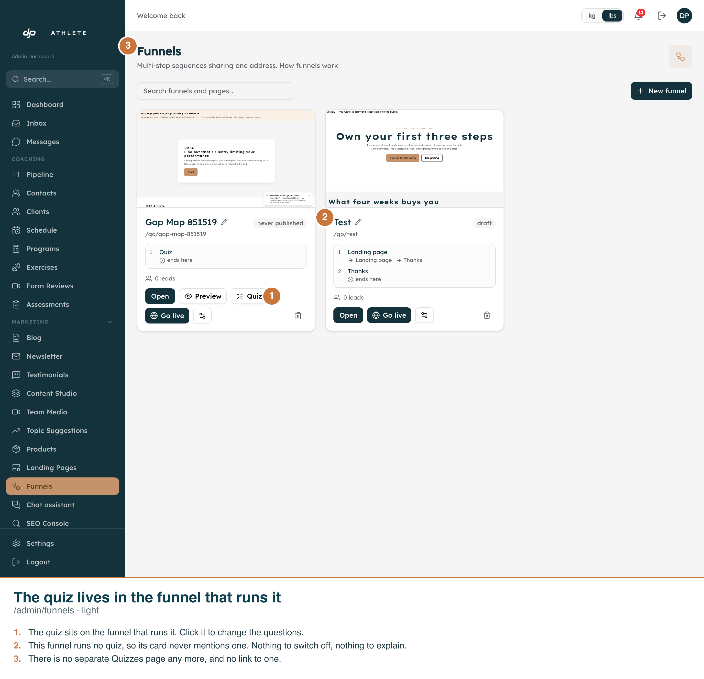
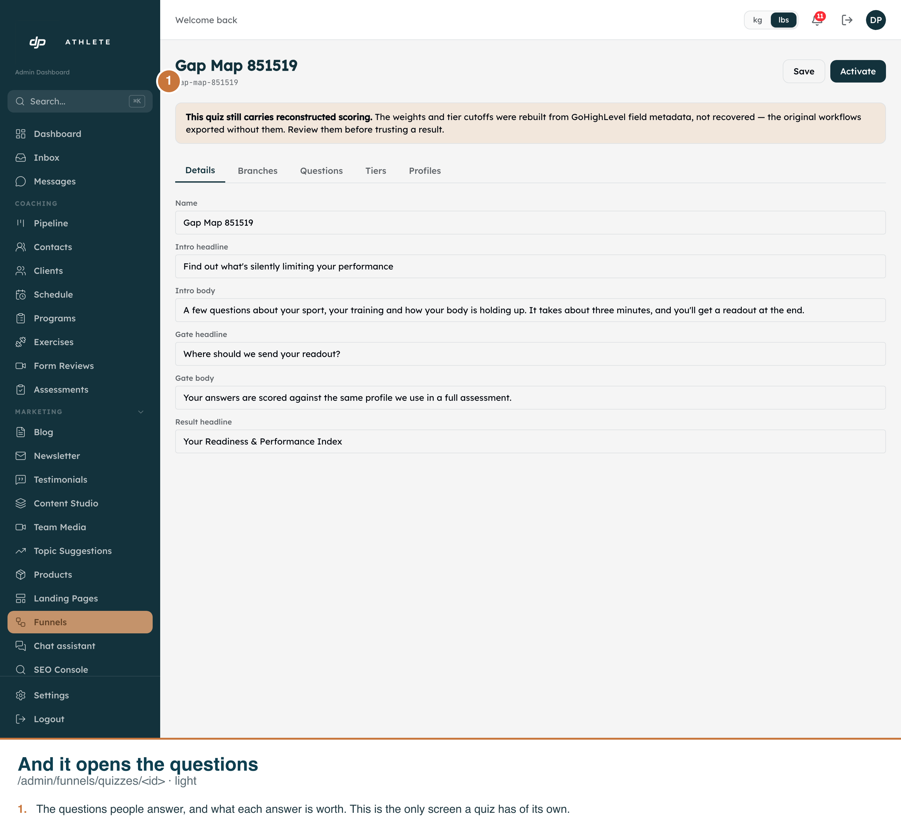

Every frame is the real app on its real route, driven by
scripts/capture-quiz-on-the-funnel-card.ts. The callouts are burned into each PNG.
Measured on the dev copy (anjvztjiokcgiyhobknq), asserted in the DOM before each shot:
a[href="/admin/funnels/quizzes"] count is zero
on the funnels board./admin/funnels/quizzes ends on
/admin/funnels — a bookmark gets the screen that replaced it, not a 404.textContent is scanned against /quiz/i and must not match. This is the
white-label requirement as an assertion — and an absence assertion needs a presence control, which
is why both cards are in the same frame.One real hole, deliberately left open and not fixed here.
deleteFunnel deletes only the funnel row — it leaves the quiz behind. With no list screen,
such a quiz is reachable only by typing its URL. It is not reachable forwards: a quiz cannot be
created without a funnel, because POST /api/admin/funnels with the quiz template creates the
pair in one call and deletes the quiz if the funnel insert fails. So the leak needs someone to delete a
quiz funnel first, and production currently has no quizzes at all.
Closing it means deleting quizzes when their last funnel goes — destructive, and it needs an explicit decision, not a quiet one. The old list screen signposted this hole; it never fixed it, and it cost every customer a permanent top-level concept in exchange.

/admin/funnels. Left: a funnel running a quiz, carrying a Quiz control beside
its own. Right: a funnel that runs none, whose card does not mention one — no disabled button, no empty
slot, no explanation. The header links to How funnels work and nothing else.
/admin/funnels/quizzes/<id> — the editor for one
quiz — is the only screen a quiz has of its own. It keeps that URL rather than nesting under a funnel
because two funnels can point at one quiz, so /admin/funnels/<id>/quiz would be a lie
about ownership.